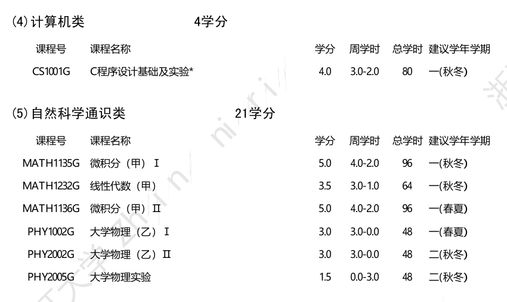
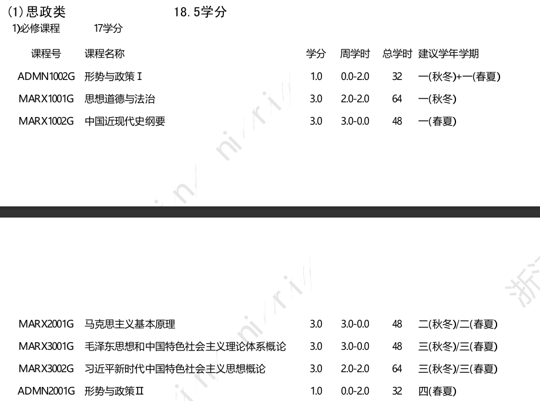
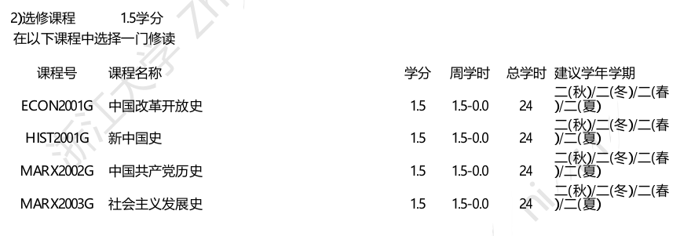
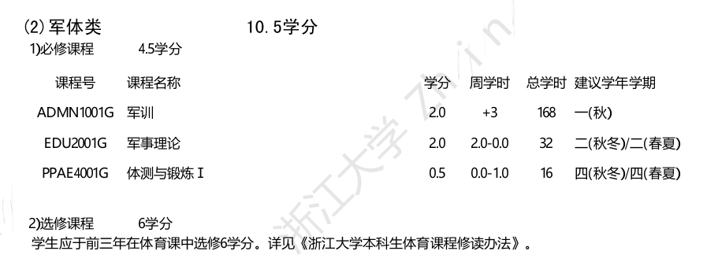
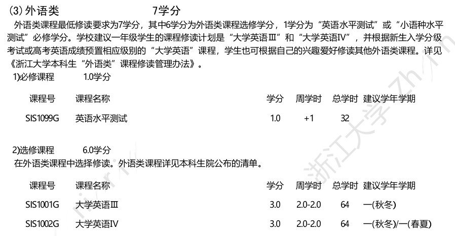
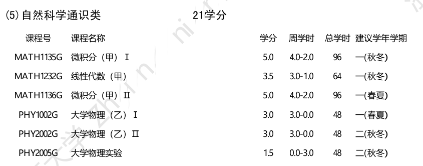
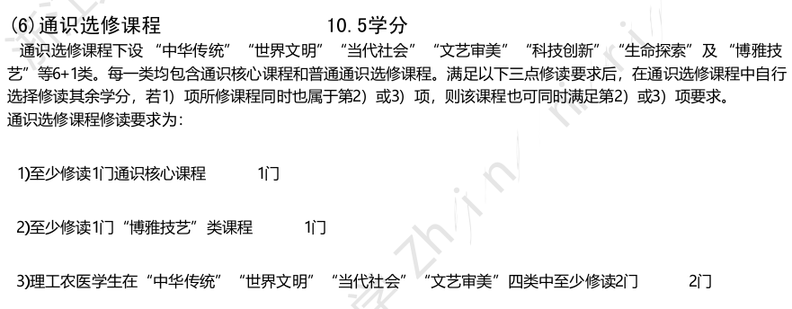
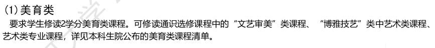

新生选课
约 2599 个字 预计阅读时间 9 分钟
这篇文章是写给工信2403班xpy的选课指导。
基础知识¶
首先，我们要明白的一点是，我们选课的第一要义是为了完成我们的培养方案。培养方案上规定了我们要修的各种学分，修完了培养方案上的学分我们才能毕业。虽然大家现在还没分专业，但是在大一上阶段，工信大类所有专业推荐修读的课都是一样的，并且在思修课和通识课上绝大部分专业都没有区别。我们以软件工程的培养方案来讲一讲选课。

首先我们能看到每个课程都有课程号，这个东西就像是一门课的身份证号。有时候有些课程有相同的名字（比如工科的常微分和数学的常微分，都叫常微分方程），但是课程实际上的内容与难度并不相同，也就是说修读另一门课并不能满足我们培养方案上的要求修读的课程。如果大家想超前选课，建议瞟一眼课程号是否正确，避免选错。
然后我们可以看到每门课都有学分，学分越多一般意味着这门课所学的知识，所需的时间越多，对于平均绩点的影响就越大。
关于绩点，我们选的每一门课，只要有学分，都会给出相应的百分制成绩。这个成绩对应一个五分制的绩点。
而一个人的平均绩点的计算方式是：（单科成绩*单科学分）的总和/总学分。
由此可见，像微积分，C程这种学分多的课对于你的成绩的影响是比较大的。
后面的周学时一般是指上几节课，前面的是理论课学时，后面的是实验课学时。我们可以发现一门课的学分等于：理论课学时+实验课学时*0.5。如果是单个学期的话学分还要再除以2。
最后的建议修读学年学期是指这门课比较适合去上的一些学期。一般来说像微积分这样的核心通识课，以及之后的一些核心专业课会在这个建议的学年学期作为预置课。有些课程可能只在推荐的学期开设。一些思政课程的并不需要参考这个建议学年学期，可以直接选。
选课系统介绍¶
各类课程注意事项¶
这里我会讲一下非专业课（即通识课）的一些课程类别的注意事项，以及推荐大家在大一上可以提前修读的课程。
思政类¶

这些课程我们一般分别简称为形策1，思修，史纲，马原，毛概，习概，形策2.这些课程都没什么前置知识，可以提前修读。

这些课程统称四史，只需要修读其中一个即可，虽然推荐是大二修读，但是大一就修完全没问题。当然这几门课褒贬不一，特点不一，建议大家先了解，再选修。
军体类¶

这里我们可以看到军训其实相当于一门课程，最终也会计算成绩。如果挂科了，你第二年暑假还要重新军训（当然一般不犯事就不会挂科）。军事理论则是一门类似思政课的课。大家也可以提前修读，不一定要到大二。
体育课需要注意的事项有点多
-
在大一，每个学期都要修读两门体育课，一门是专项课（1学分），一门是身体素质课（0学分）。这两门课程是绑定的，如果你只选其中一门都是没有用的。理论上，身体素质课所有老师教的都是一样的内容，但是不同老师风格不同，上课强度也不同。有的老师可能很轻松，有的可能很累。建议大家，选课时自行搜索一下老师的评价。大一结束后就不需要选身体素质课了。
-
关于专项课，学校给大家提供了很多选择，大家可以选多个志愿（最多三个）。这个建议大家根据自己的兴趣来选，不要全选热门的老师，容易选不上。如果没选上体育课一定要在第二轮，或者之后的补选中选上，因为如果你一学期没选上体育课，在大四之前的某个学期，你需要上两门体育课，然后你需要至少80次跑步打卡才能在两门课中都拿到这部分分数。一个字，牢 =<
外语类¶

首先这个英语水平测试大一应该没有，大家之后再做准备。然后这里显示要在外语类课程中选择6学分，这6学分可以选大英三，大英四，也可以选其他一些小语种，或者选一些1.5学分的外语课，比如托福阅读，英语词汇学这种。然后预置大英四的同学若想修读大英三，有两种方法
-
比较稳妥的方法：保四选三，即在第一轮选课时不退大英四，先选大英三，第二轮选课时如果选上大英三再退大英四。这样做的话会保证大一上肯定有英语课上，但是这样选上大英三的概率可能较低，也会挤占课表上选其他课的空间。
-
比较激进的办法：推四选三，即第一轮直接把大英四退了，选大英三。这样选上大英三的概率高一些，并且有更多的选课空间。
个人建议还是第一种，因为选课系统是抽奖，只要选课人数超过容量，就有选不上的可能。而你们这届学分上限又降了，选不了太多课，所以应该不太需要担心挤占课表。
当然，现在也可以提前选一些小语种或者其他英语课，不必拘泥于大学英语。
计算机类¶
没啥好说的，大家都就一个预置的C程，认真学就行。
自然科学通识类¶

这一部分基本上都是数理课，在对应的建议学年学期会预置的。并且这一部分不建议提前修读，因为：
-
这些课程基本都有明显的前置关系，比如学了微积分1才能学微积分2和大学物理1
-
不同专业的自然科学通识类课程可能有所区别，比如计院学的是大物（乙），而控院是大物（甲）
另外需要注意的是，这类课程有很多替代关系，我们可以修读高层次的课，也能满足培养方案的要求。比如数学分析可以覆盖微积分，高等代数可以覆盖线性代数，普通物理学可以覆盖大学物理。而不同专业对应不同的课程修读要求。如果有希望转专业的同学，请关注目标专业的培养方案，是否有更高层次的课程修读要求，以便后续转专业。
通识选修课程¶

学校提供了大量的通识课程供大家选择。而大家也可以根据自身的兴趣来选课。当然请满足培养方案上的几个要求。
我们建议大家在大一尽量多选一些通识课，这些课程都相对数理课比较轻松，一些课程也可以丰富自己的经历。尤其记得选通识核心课，因为难选到。
美育类¶

美育课其实是通识选修课中的一种，包括一些鉴赏类（外国音乐鉴赏等）（一般属于文艺审美），技艺类（打开艺术之门系列）（一般属于博雅技艺）等。一定要早点修，早点修，早点修。有很多学长大四了还没选上美育课，只能靠学院帮忙补选。打开艺术之门系列课也因其选上难度大被称为，踹开艺术之门
推荐修读：打开艺术之门-萨克斯（徐浩） 这门课唯一的缺点就是要自备萨克斯，但是一般从上一届上这门课的学长学姐那里可以买二手的。这是一门完全了入门课，面向零基础的小白。课程体验非常好，徐老师是浙江省萨克斯协会副会长，专业水平一流，上课也很幽默。之前没学过萨克斯的同学不用害怕分数低，学过萨克斯的同学也不要沾沾自喜，徐老师看的是大家一个学期下来的进步。总之是一门练就有效的课。
劳育类¶
大家不太需要在意劳育类课程，一般工信的专业之后的专业课里会包含劳育类课程。
创新创业类课程¶
这类课基本没有好课，大家不要希望一个从来没创业过的人来教你创新创业你能学到东西。总之这种课就是早修早坐牢，晚修完坐牢。不同的课有不同的坐牢形式，比如创业启程这门课事比较少，但是有闭卷考试，给分奇低，有的课则是事情贼多，完全不像一两个学分的课。也是建议大家在选修之前提早了解这类课程的特点，以便后续安排。
心理类¶
这是第一次出现在培养方案上课程类别，看了一下貌似很多课也还是以前开过的通识课，应该也能查到一些相关的评论的。